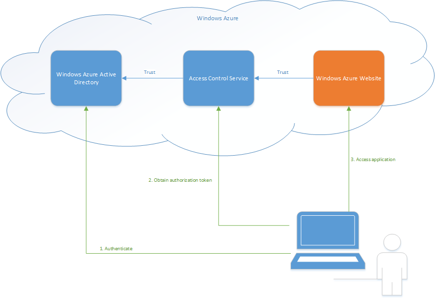

Windows Azure includes two services, Windows Azure Active Directory (WAAD) and Access Control Services (ACS), that you can use as part of a claims-based authentication and authorization infrastructure. This sample shows how you can quickly and easily configure these services and an ASP.NET MVC web application to enable users to authenticate using a variety of identity providers and use role-based authorization in the web application.
Claims
This example uses claims-based authentication and authorization. You can think of a claim as being a token issued by a trustworthy source that tells you something about the person (or system) who is submitting the claim. For example, your ASP.NET website might expect a user to submit claims specifying the username, email address, and organization. For the website to be able to trust these claims there must be a complex system in place that signs and encrypts the claims. WAAD and ACS provide most of this infrastructure for you and Visual Studio makes it easy to integrate a standard web application into this infrastructure with very little code. This claims-based approach is also based on standards which makes it very easy to integrate with other systems and identity providers.
The example application
The following diagram illustrates the relationships between the key elements of the system. 
The diagram shows the direction of the trust relationships: the application trusts ACS, and ACS trusts WAAD. It also shows the sequence of activities associated with a user signing in to the application. In this example:
- The user authenticates with WAAD which issues a number of claims such as the name and email address of the authenticated user.
- The claims issued by WAAD are submitted to ACS which applies some transformation logic and issues an additional claim with the user's role.
- All of the claims issued by WAAD and ACS are submitted to the web application which uses those claims to customize the UI (showing the name of the logged on user) and to control access to different parts of the site (based on whether the user is in the Managers role or the Users role).
There are some general points to note about this process.
- The user is largely unaware of WAAD and ACS. The user is simply presented with a sign-in page to enter their username and password when he or she tries to access the web application. A complex set of redirections takes place behind the scenes to ensure that the user authenticates and ACS gets to perform its role of transforming the set of claims issued by WAAD.
- It would be possible to customize WAAD to issue the role claim. However, we also want to extend the example to enable users to authenticate with a Microsoft ID or Google ID as alternatives to a WAAD ID. Therefore, using ACS to assign the role claim provides a single location for managing roles used in the web application.
References
- For an introduction to claims-based authentication and authorization, see A Guide to Claims-Based Identity and Access Control
- For an overview of WAAD, see What is Windows Azure Active Directory?
- For an introduction to ACS, see Access Control Service 2.0